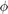

Q3. f=f1+f2
Assignment4-3
Rollno: 163059009, 16305R011
Contents
1.2 Init
clear all; f =zeros(128,1); s=[5,10,20,25,35,40,45,50];%number of sparse elements per signal % sigma = 0.05× average value of f1 + f2 . stdev=[0,0.1,0.3,0.4,0.6,0.8,1]; %s=[50]; %stdev=[0]; A1 = conj(dftmtx(128))/128; A2=eye(128); %identity matrix % Result Info avg=zeros(size(s,2),size(stdev,2)); f1Error=zeros(size(s,2),size(stdev,2)); f2Error=zeros(size(s,2),size(stdev,2)); predF1=zeros(128,size(s,2)*size(stdev,2)); predF2=zeros(128,size(s,2)*size(stdev,2));
1.2 Algo: Alternate Minimization
This algo uses the "Alternate Minimization" for the reconstruction.
Objective Function:
s.t and
Where,
s.t s.t A1 is DFT matrix of 128x128 & is sparse
s.t
1d-DFT Matrix,
 Identity Matrix,
Identity Matrix,
As we know that by C.S theory identity matrix is highly incoherent with DFT.
So here,  is Identity Matrix,
Therefore,
Algo
For finding & , we will use OMP with .
- Initalize: to some random value
- Do the following till convergence (ith iteration)
1.3. Creating f from f1 and f2 and reconstructing f1 & f2 from f
tic for i=1:size(s,2) fprintf('-------------------[sparsity:%d]-------------------\n',s(i)); % Creating signal f1 with s(i) sparse supportF1=randi([1,128],1,s(i)); coeff=randi([1,100],1,s(i)); f1=A1(:,supportF1)*coeff'; % Creating signal f2 with s(i) sparse supportF2=randi([1,128],1,s(i)); coeff=randi([1,100],1,s(i)); % can change this f2=A2(:,supportF2)*coeff'; %Creating signal f f=f1+f2;T0=s(i); % Used in OMP Algo for j=1:size(stdev,2) fprintf('###########[std:%f]##############\n',stdev(j)); % Adding Noise added std=stdev(j).*mean(f); noise=randn(128,1)*std; noisyF=f+noise; % Using alternate min. technique to find coeffs [f1Separated,f2Separated]=findSepratedSignals(noisyF,A1,A2,T0); %fprintf('sparsity=%d sigma=%f error=%f\n',s(i),stdev(j),norm(f-(f1Separated+f2Separated))); avg(i,j)=avgRelativeError([f1,f2],[f1Separated,f2Separated]); f1Error(i,j)=rmse(f1,f1Separated); f2Error(i,j)=rmse(f2,f2Separated); predF1(:,i*j)=f1Separated; predF2(:,i*j)=f2Separated; end end toc
Elapsed time is 133.589662 seconds.
1.4 Plot of error grpah: Avf. Realtive Error, F1 RMS & F2 RMS
figure('name','Avg. Relative error') avg=avg./max(avg(:)); x=s'; c = {'g','m','b','r','y','c','k'}; for j=1:size(avg,2) y=avg(:,j); plot(x,y,strcat('*--',c{j})),hold on end title('\fontsize{10}{\color{magenta} Avg. Relative error}'); grid on; xlabel('Sparsity'); ylabel('Avg. Relative error'); legend('std:0','std:0.1','std:0.3','std:0.4','std:0.6','std:0.8','std:1','Location','northwest'); % F1 error figure('name','F1') x=s'; c = {'g','m','b','r','y','c','k'}; for j=1:size(f1Error,2) y=f1Error(:,j); plot(x,y,strcat('*--',c{j})),hold on end title('\fontsize{10}{\color{magenta} F1 RMS Error}'); grid on; xlabel('Sparsity'); ylabel('RMS'); legend('std:0','std:0.1','std:0.3','std:0.4','std:0.6','std:0.8','std:1','Location','northwest'); % F2 error figure('name','F2') x=s'; c = {'g','m','b','r','y','c','k'}; for j=1:size(f2Error,2) y=f2Error(:,j); plot(x,y,strcat('*--',c{j})),hold on end title('\fontsize{10}{\color{magenta} F2 RMS Error}'); grid on; xlabel('Sparsity'); ylabel('RMS'); legend('std:0','std:0.1','std:0.3','std:0.4','std:0.6','std:0.8','std:1','Location','northwest');